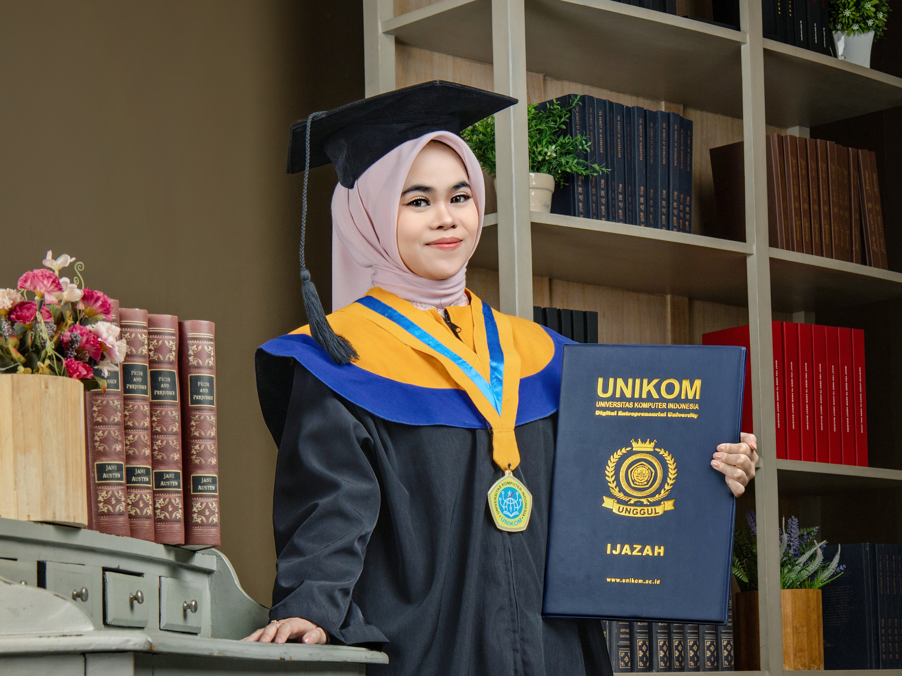

Come take a peek at my little journey, the experiences that shaped me and helped me grow along the way.
Universitas Komputer Indonesia
RevoU Tech Academy - Certified Independent Study (SIB)
CodeLabs was originally a student programming club in 2009 under the name UNIKOM Programming Team which aims to be a place to research and prepare for various IT competitions.
Visit Website or Visit InstagramThis was one of our offline sales meeting activities, conducted to establish a partnership with a company. On this occasion, we partnership with an English language training institution in Bandung.